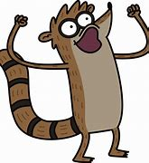

RIGBY

Rigby é um dos protagonistas de Apenas um Show (Regular Show),
uma série animada da Cartoon Network. Ele é um guaxinim preguiçoso,
impulsivo e infantil, que trabalha no parque ao lado de seu melhor amigo,
Mordecai. Embora tenha boas intenções, Rigby muitas vezes causa problemas
devido à sua irresponsabilidade e teimosia, o que resulta em situações
absurdas e caóticas. Apesar de sua natureza egoísta e competitiva,
ele valoriza muito suas amizades e, ao longo da série,
amadurece consideravelmente. Seu jeito hiperativo e suas
frases engraçadas fazem dele um dos personagens mais icônicos
da animação.
VOLTAR